리눅스마스터-1급 (2007-08-19 기출문제)
1과목: 리눅스 실무의 이해
1. 다음 중 시스템 프로그램에 대한 설명으로 틀린 것은?
- 매크로 프로세서(Macro Processor) : 매크로 호출(Macro Call)을 매크로 정의(Macro Definition)로 바꾸어 주는 프로그램
- 컴파일러(Compiler) : 저급언어인 어셈블리어로 작성된 프로그램을 기계어로 번역하는 언어 번역 프로그램
- 운영체제 : 기억장치 , 프로세 서 , 주변장치 그리고 정보와 같은 자원들과 서비스들의 할당에 관련되어 있는 프로그램
- 로더(Loader) : 어떤 프로그램을 실행하기 위해서 그 프로그램의 명령문들과 데이터들을 주기억장치에 적재하는 프로그램
(정답률: 44%)

2. 다음 중 리눅스 커널 2.2와 비교하여 커널 2.4만의 특징에 해당하는 것은?
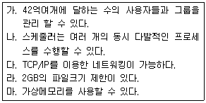
- 가
- 가, 나
- 가, 나, 다
- 가, 나, 다, 라
(정답률: 12%)
3. 다음과 같은 소프트웨어 종류에서 저작권이 없는 소프트웨어는 어느 것인가?
- 자유 소프트웨어(Free software)
- 카피레프트 소프트웨어(Copylefted software)
- 공용 소프트웨어(Public Domain software)
- GPL 소프트웨어(GPL'ed software)
(정답률: 24%)
4. 다음 중 리눅스 커널에 관련된 내용으로 알맞은 것은?
- 리눅스를 새로 설치하지 않고, 리눅스 커널을 2.6.3에서 2.6.7로 업그레이드하였다.
- 레드햇 리눅스 배포판을 설치하였는데, 리눅스 커널의 버전이 2.5.3이었다.
- 우리 회사에서 어제 새로 개발한 CPU에 리눅스를 사용하기 위해서 인터넷에서 다운받은 커널을 수정없이 바로 설치하였다.
- 새로운 커널이 나오면 무조건 업그레이드 하여야 한다.
(정답률: 48%)
5. 다음 배포판 중에서 패키지를 .tar.gz로 배포하고 있으며 패키지 관리가 어려운 패키지는 무엇인가?
- 맨드레이크(Mandrake)
- 레드햇(RedHat)
- 슬랙웨어(Slackware)
- 페도라(Fedora)
(정답률: 53%)
6. 다음 중 하드웨어에 대한 설명 중 틀린 것은?
- 메인보드 : 리눅스를 설치할 수 없는 메인보드도 있다.
- RAID : 데이터 손실을 최소화하기 위해 데이터를 여러 개의 하드디스크에 분산 또는 중복시켜 저장하는 기술이다.
- PROM : 메모리속에 저장된 내용을 지우고 재사용할 수 있는 ROM이다.
- CPU : 레지스터 , 산술논리연산장 치 , 제어장치로 구성된다.
(정답률: 60%)
7. 정상적으로 다중 OS 부팅(리눅스와 MS 윈도우즈 XP)이 되는 시스템에서 다중 OS 부팅이 불가능 하게 되는 경우는?
- 리눅스의 재설치
- 첫 번째 HDD의 MBR의 삭제
- 부트로더 재설치
- 부트매니저의 변경
(정답률: 70%)
8. /proc 디렉토리에는 시스템의 각종 프로세스, 프로그램 정보, 그리고 하드웨어적인 정보들이 저장 된다. /proc 내의 파일과 그 정보가 올바르게 설명된 것은?
- /proc/cpu : 프로세서(CPU)의 정보를 저장하고 있는 파일이다.
- /proc/file : 시스템에 설정 되어 있는 파일 시스템에 대한 정보를 저장하고 있다.
- /proc/meminfo : 가상메모리에 대한 정보도 포함하고 있다.
- /proc/stat : 시스템이 현재 사용 중인 커널 버전에 대한 정보를 저장하고 있다.
(정답률: 40%)
9. 리눅스에서 사용하는 ext2와 ext3 파일시스템을 비교하였을 때의 설명으로 알맞은 것은?
- ext2는 저널링을 지원하지 않는다.
- ext2의 슈퍼블록의 구조와 ext3의 슈퍼블록의 구조는 서로 다르다.
- ext2로 구성된 파일시스템을 ext3로 변경할 수는 없다.
- ext3은 ext2와 호환되지 않는다.
(정답률: 69%)
10. 다음 중 X 서버의 이름이 아닌 것은?
- Xorg
- Xlib
- X386
- XFree86
(정답률: 48%)
11. 다음 중 MS의 Windows XP와 같이 GUI 인터페이스를 제공하는 데스크탑 환경은?
- KWin
- WindowMaker
- KDE
- Xorg
(정답률: 40%)
12. 사용자 쉘(shell) 환경 설정 파일을 수정한 후에, 그 내용을 적용시킬 때 사용할 수 있는 방법이 아닌 것은?
- 리눅스 시스템을 종료시킨 후 다시 시작한다.
- 사용자 계정을 삭제 후 다시 생성한다.
- 로그 아웃 후에 다시 로그인 한다.
- source 명령을 사용한다.
(정답률: 64%)
13. 사용자 쉘(shell)에서 파이프(pipe, |)는 앞 명령어의 출력을 다음 명령어의 입력으로 보내는 기능을 수행한다. 다음 명령을 실행하였을때 화면에 출력되는 내용은 무엇인가?
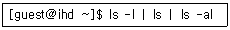
- ls -l 의 실행결과
- ls 의 실행결과
- ls -al 의 실행결과
- 세 명령의 실행결과 모두
(정답률: 25%)
14. 프로세스(Process)의 정의에 대한 설명 중 옳지 않은 것은?
- 커널에 등록되고 커널의 관리하에 있는 작업
- 실행중인 프로그램
- 프로세스 관리 블록을 할당받은 개체
- 동기적 행위를 일으키는 주체
(정답률: 57%)
15. 프로세스 스케줄링 방법 중 RR(Round-Robin) 방식에 대한 설명으로 틀린 것은?
- 시간할당량이 작을 경우 문맥교환에 따른 오버헤드가 커진다.
- 대화형 시스템이나 시분할 시스템에 적합한 방식이다.
- 처리하여야 할 작업의 양이 가장 작은 프로세스에게 cpu를 할당하는 기법이다.
- FIFO 방식으로 선점(preemptive)형 기법이다.
(정답률: 43%)
16. LAN 간을 상호 접속해 주는 연결 장치로서 제2계층(데이터링크 계층)에서 동작하는 장비는?
- 브리지
- 게이트웨이/라우터
- 리피터
- 프로토콜 번역기
(정답률: 75%)
17. TCP/IP의 계층 중 종단 시스템간 에러탐지와 수정기능 등을 포함하며 신뢰성을 보장하는 데이터 전달 서비스를 담당하는 계층은?
- 전송 계층
- 응용 계층
- 네트워크 주소 계층
- 세션 계층
(정답률: 44%)
18. TCP/IP 네트워크를 구성하기 위해 1개의 C 클래스 주소를 할당받았다. C 클래스 주소를 이용 하여 2개의 동일한 크기의 서브네트워크를 구성 하고자 한다면 서브넷 마스크(subnet mask)를 어떻게 정해야 하는가?
- 255.255.254.0
- 255.255.255.0
- 255.255.255.128
- 255.255.255.1
(정답률: 69%)
19. ifconfig 명령을 사용하면 eth0 장치에 IP 주소를 직접 할당할 수 있다. 하지만, 이 주소는 리눅스 시스템을 다시 시작하게 되면 사라지게 된다. 리눅스 시스템을 시작할 때마다 자동으로 특정 IP 주소를 할당하기 위해서는 다음 중 어느 파일에 IP주소를 설정하여야 하는가?
- /etc/hosts
- /etc/resolv.conf
- /etc/sysconfig/network
- /etc/sysconfig/network-scripts/ifcfg-eth0
(정답률: 56%)
20. aaa.ihd.or.kr에서 telnet bbb라는 명령어로 같은 사무실의 bbb.ihd.or.kr로 접속하고자 하였으나 실패하였다. 다음 중 그 원인을 파악하기 위해 aaa.ihd.or.kr에서 사용할 수 있는 방법이 아닌 것은?
- ping bbb.ihd.or.kr 명령어로 시스템의 동작여부를 점검한다.
- nslookup bbb 명령어를 사용하여 IP주소로 DNS변환이 되는지 점검한다.
- ps -aux를 사용하여 telnet을 서비스하기위한 관련 데몬이 실행되고 있는지 점검한다.
- traceroute bbb 명령어로 네트워크 경로를 추적해 본다.
(정답률: 48%)
2과목: 리눅스 시스템 관리
21. 리눅스에 등록된 사용자 계정을 일시 비활성화하기 위해 useradd 명령어를 사용하여 설정하고자 할때 사용되는 옵션으로 알맞은 것은?
- -f
- -d
- -g
- -o
(정답률: 34%)
22. userdel 명령어를 사용하여 사용자 계정 및 홈디렉토리까지 삭제하고자 할때 사용되는 옵션으로 알맞은 것은?
- -r
- -d
- -e
- -m
(정답률: 73%)
23. 다음 중 리눅스에서 프로그램 설치와 가장 관련이 먼 명령어는 어느 것인가?
- make install
- yum
- modprobe
- rpm
(정답률: 81%)
24. 다음 중 userdel 명령어와 가장 관련이 먼 파일은 어느 것인가?
- /etc/passwd
- /etc/group
- /etc/hosts
- /etc/shadow
(정답률: 37%)
25. 다음 리눅스의 디렉토리 중 일반적인 시스템 로그파일들이 있는 상위 디렉토리는 어디인가?
- /etc
- /var
- /proc
- /home
(정답률: 45%)
26. 다음 중 리눅스에서 부팅영역으로 사용하도록 권장되는 파일시스템인 것은?
- EXT3
- JFS
- ReiserFS
- XFS
(정답률: 48%)
27. 계정자의 홈 디렉토리, 유효기간, 기본 그룹등을 변경하는 명령어는?
- su
- usermod
- chown
- chage
(정답률: 62%)
28. 다음 중 프로세스 관리와 가 장 관련이 있는 명령어는 어느 것인가?
- ifconfig
- cd
- xkill
- modinfo
(정답률: 34%)
29. 다음 중 리눅스에서 백그라운드로 명령어를 실행하기 위해 명령어 입력시 명령줄 맨 끝에 추가하는 것으로 알맞은 것은?
- &
- >
- &&
- %
(정답률: 77%)
30. 다음 중 리눅스 기반의 모든 파일시스템에서 가지는 구조의 구성요소가 아닌 것은?
- 부트스트랩
- 헤더블록
- I-node
- 데이터블록
(정답률: 19%)
31. 리눅스에서 rpm을 이용하여 시스템에 설치된 clone라 는 패키지 정보를 보고 자 한다. 다음 명령어 중 올바른 것은?
- rpm -qf clone
- rpm -qi clone
- rpm -qp clone
- rpm -qr clone
(정답률: 48%)
32. 다음 컴파일을 통한 리눅스 패키지 설치 과정에 필요한 항목들 중 가장 거리가 먼 것은?
- make
- gcc
- configure
- comm
(정답률: 74%)
33. 4블록크기의 파일이 손상되어 복구하고자 한다. 이럴 경우 크기가 얼마인 파일들을 검색하여 복구 대상으로 선정해야 하는가?
- 1024KB
- 2048KB
- 4096KB
- 8192KB
(정답률: 56%)
34. 리눅스에 마운트 된 CD롬은 언제까지 마운트된 상태로 유지가 되는가?
- 사용자 모드 변경시
- open 명령어 하기 전까지
- 파일 복사가 완료될때 까지
- 언마운트(umount)하기 전까지
(정답률: 79%)
35. 다음 중 리눅스 커널이 로딩될 당시 최초의 프로세스는 어느 것인가?
- vmlinuz 프로세스
- init 프로세스
- root 프로세스
- 슈퍼데몬 프로세스
(정답률: 53%)
36. ssh를 이용해 리눅스 시스템에 원격접속을 하여 다음과 같은 명령어를 실행하던 중 사용자의 시스템이 다운 되었다. 이 경우 실행한 명령어의 결과는 어떻게 되는가?
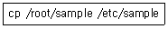
- 파일복사가 중지된다.
- 파일복사가 완료된다.
- 복사된 파일이 삭제된다.
- 다음번 동일 계정으로 접속시 파일복사가 계속된다.
(정답률: 45%)
37. 다음은 RPM 명령을 나타낸 것이다. 사용방법 및 명령어 형식의 관계가 잘못 연결된 것은?
- 제작방법 : rpmbuild -bb 패키지 스팩
- 업그레이드 방법 : rpm -v 패키지 명
- 질의방법 : rpm -q 패키지 목록
- 제거방법 : rpm -e 패키지 명
(정답률: 54%)
38. 다음 중 리눅스 패키지 설치프로그램인 rpm -i 명령어와 가장 유사한 패턴의 명령어는 어느 것인가?
- make install
- mkfs
- gzip
- makefile
(정답률: 64%)
39. 다음 패키지 파일에 대한 설명으로 틀린 것은?
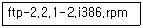
- x86_64 기반의 커널에서 설치하여 사용할 수 없다.
- i386은 인텔 386이상 CPU 플랫폼에서 작동 한다는 것을 의미한다.
- rpm 프로그램을 이용해서 설치할 수 있다.
- 제작자가 2번 걸쳐 이 패키지를 패키징 한 것을 알 수 있다.
(정답률: 30%)
40. rpm을 이용하여 패키지를 설치하고자 하는데, 이미 설치된 패키지들과의 의존성 문제가 발생하여 이를 무시하고 설치하고자 한다. 다음 중 이때 사용될 옵션으로 알맞은 것은?
- --force
- --loop
- --nodeps
- --nocheck
(정답률: 73%)
41. 다음 중 리눅스 시스템의 I/O와 관련된 내용으로 틀린 것은?
- DMA는 외부장치로부터 메모리로 직접 바이트열을 보내는 기능을 말한다.
- IRQ는 외부장치가 장치 드라이버에 신호를 전달하는 방법으로 각각마다 고유의 번호를 가지고 있다.
- PC의 구조에는 IRQ, I/O주소의 수에 제한이 있으므로 각 장치 드라이버의 프로그램 중에 I/O주소와 IRQ를 하드코드화 하면 용이하다.
- I/O주소를 사용하면 장치 드라이버가 외부장치에 데이터를 전달할 수 있다.
(정답률: 63%)
42. 커널 2.6.7에서 커널 2.6.10으로 업그레이드를 하려고 한다. 꼭 필요한 파일들로만 구성된 것은?
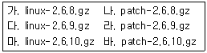
- 가, 다, 마
- 나, 라, 바
- 바
- 나, 라, 마
(정답률: 39%)
43. 리눅스 커널 설정에서 사용하지 않기로 설정한 하드웨어를 사용하기 위하여 할 수 있는 방법이 아닌 것은?
- 해당 하드웨어를 직접 사용하는 프로그램 사용
- 디바이스 드라이버를 모듈로 사용하도록 커널 설정 수정 후 커널 재 컴파일
- 디바이스 드라이버 모듈을 수동으로 직접 로드
- 커널 에 디바이 스 드라이버 삽입 후 커널 재컴파일
(정답률: 78%)
44. 다음은 커널에 로드되어 있는 모듈이다. 이중 rmmod 명령에 의해 언로드될 수 있는 것은?
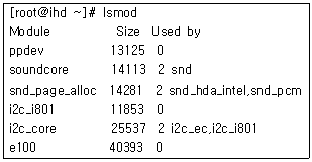
- soundcore
- snd_page_alloc
- i2c_core
- e100
(정답률: 60%)
45. 다음 중 커널 2.6에서 사용할 모듈들을 다루기 위한 insmod, rmmod, lsmod, modprobe, depmod 등을 포함하는 패키지는?
- usermode-x.y.z.tar.gz
- module-init-tools-x.y.z.tar.gz
- environment-modules-x.y.z.tar.gz
- mod_security-x.y.z.tar.gz
(정답률: 55%)
46. 디스크가 1개뿐인 리눅스 시스템의 디스크를 리눅스 재설치 없이 새 디스크로 교체하고자 한다. 새 디스크의 파티션은 기존과 동일하게 1개의 파티션만 설정할 예정이다. 이때 해야 하는 일로 적당하지 않은 것은?
- 새 디스크 포맷하기
- 기존 디스크의 내용을 새 디스크로 복사하기
- /etc/fstab 설정하기
- 새 디스크로 부팅하기 위하여 LILO준비하기
(정답률: 20%)
47. 다음과 같은 명령으로 응급복구 디스켓을 만들었다. 이 응급복구 디스켓의 lilo.conf 부분으로 틀린 것은?
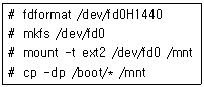
- boot=/mnt/boot
- map=/mnt/map
- image=/mnt/vmlinuz
- install=/mnt/boot.b
(정답률: 14%)
48. 다음 중 시스템에 의해 자동으로 생성 및 수정되는 파일이 아니며, 시스템 관리자가 필요에 따라 수정할 수 있는 것은?
- /etc/mtab
- /etc/printcap
- /etc/fstab
- /etc/sysconfig/hwconf
(정답률: 58%)
49. 시스템에서 지원하지 않는 사운드카드를 사용하려고 할때 해야 하는 단계를 순서별로 알맞게 나열한 것은?
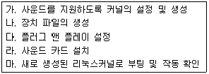
- 가-나-다-라-마
- 라-다-가-나-마
- 나-가-라-다-마
- 라-나-가-다-마
(정답률: 19%)
50. 다음 ( )안에 들어갈 단어가 차례대로 알맞게 나열된 것은?
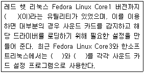
- sndconfig, system-config-soundcard, sysconf-sound
- redhat-config-soundcard, system-config-soundcard, sysconf-snd
- soundconfig, system-config-sound, sysconf-sound
- sysconf-sound, system-config-soundcard, soundconfig
(정답률: 25%)
51. 다음 중 파일시스템 전체를 이미지로 저장하여 시스템 장애시 저장해둔 이미지 를 사용하여 시스템을 복구하고자 한다. 이 두 가지 작업을 할 수 있는 가장 적합한 명령어는 어느 것인가?
- dd
- tar
- gzip
- restore
(정답률: 34%)
52. 다음 중 리눅스 기반에서 외부로부터의 해킹시도를 차단하기위해 제공되는 보안서비스와 가장 거리가 먼 것은 어느 것인가?
- squid
- ssh
- selinux
- nmap
(정답률: 30%)
53. 다음 중 웹 서버 보안을 위한 관련 지침으로 가장 거리가 먼 것은 어느 것인가?
- CGI 디렉토리에는 쉘과 인터프리터를 설치하지 않는다.
- 관리자(root) 계정으로만 웹 관리를 한다.
- 필요하지 않은 쉘과 인터프리터는 설치하지 않는다.
- HTML문서에 접근하는 모든 사용자를 위한 특정 그룹을 만든다.
(정답률: 28%)
54. 다음 중 리눅스 시스템 보안을 위해 수행할 작업으로 알맞지 않는 것은?
- 최신 보안패치 설치
- 불필요한 서비스 제거
- ssh를 통한 root 원격 접속
- shadow 기능을 이용한 사용자 계정 관리
(정답률: 60%)
55. 외부에서 NFS의 접속을 막기 위해 포트 번호를 차단하고자 한다. 만약 리눅스 시스템에서 현재 제공되고 있는 NFS의 접속포트를 알지 못하는 경우 이를 확인하는 방법으로 적당한 것은?
- host 명령어를 통해 포트 번호를 알아낸다.
- ping 명령어를 통해 포트 번호를 알아낸다.
- /etc/resolve.conf 파일정보를 통해 포트번호를 알아낸다.
- /etc/services 파일정보를 통해 포트번호를 알아낸다.
(정답률: 60%)
56. 다음 중 Sendmail 보안을 위해 적용해야될 내용들로 알맞지 않는 것은?
- 주기적으로 가장 최신 패치를 적용해야 한다.
- Wizard 옵션을 가급적이면 사용하지 않는다.
- Debug 옵션을 가급적이면 사용하지 않는다.
- aliases 파일에 정의되어 실행되는 모든 프로그램의 사용권한은 777, 소유자는 일반 관리자가 되어야 한다.
(정답률: 57%)
57. 외부로 Anonymous FTP 서비스를 제공하고자 한다. 안전한 서비스 제공을 위해 관리자가 설정 해야될 내용으로 적당하지 않은 것은?
- ∼ftp 디렉토리 내에 어떤 외부 기계의 디스크도 마운트하지 않는다.
- ∼ftp의 파일을 옮기거나 지울 때 패스워드 파일에서 ftp 계정을 지운다.
- guest, anonymous 계정 사용자의 delete, overwrite, rename, chmod 옵션을 없애고 umask 옵션을 추가한다.
- 패스워드 파일의 ftp 계정 패스워드에 *를 넣거나 NP를 넣어서 패스워드를 사용한 로그인을 금지하고 정상적인 쉘을 주지 않는다.
(정답률: 16%)
58. 다음 중 외부로부터의 스니핑(sniffing)에 대한 대책으로 적당하지 않는 것은?
- 보안 프로그램 등을 사용하여 네트워크 카드가 Promiscuous 모드에 있는가 확인한다.
- 열린 파일을 조사한다.
- 네트워크에 ICPM 패킷을 발생시킨다.
- ps 명령어로 수상한 이름의 Process를 찾는다.(예 : a.out, in.telnetd, in.uucpd 등)
(정답률: 59%)
59. 다음 중 리눅스시스템 부팅과정이 기록된 로그 파일은 어느 것인가?
- /var/log/boot.log
- /var/log/dmesg
- /var/log/secure
- /var/log/lastlog
(정답률: 25%)
60. 다음 중 tar 명령어를 통해 파일을 백업하려고 한다. 백업시 백업되는 파일을 bzip으로 압축하고자 할 경우 추가되는 옵션으로 알맞은 것은?
- z
- j
- a
- g
(정답률: 34%)
3과목: 네트워크 및 서비스의 활용
61. 다음은 무엇에 관련된 설명인가?
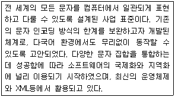
- ASCII CODE
- KSC5601
- UNICODE
(정답률: 70%)
62. 다음 설명 중 올바른 내용으로 짝지어진 것은?
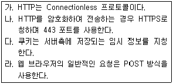
- 나, 다
- 가, 라
- 다, 라
- 가, 나
(정답률: 9%)
63. 다음 설명 중 ( ) 안에 들어갈 내용과 이와 관련이 있는 아파치 옵션은 무엇인가?
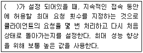
- MaxSpareServer - MaxClients
- KeepAlive - MaxKeepAliveRequests
- Timeout - MaxClients
- KeepAliveTimeout - MaxKeepAliveRequests
(정답률: 41%)
64. 다음 동적 웹 페이지와 관련된 내용으로 알맞은 것은?
- 동적 웹 페이지 구성에는 데이터베이스가 필수 요소이다.
- 클라이언트에서는 JSP가 주로 사용된다.
- 자바 서블릿은 CGI 스트립트이다.
- CGI는 프로세스의 생성과 초기화 에 많은 시간이 필요하다.
(정답률: 42%)
65. 다음 ( )안에 공통적으로 들어갈 내용은 무엇인가?
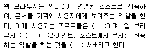
- FTP
- HTTP
- NNTP
- IRC
(정답률: 63%)
66. 데이터베이스에 관련된 설명 중 틀린 것은?
- 다수의 응용 프로그램이 통합된 정보를 공유하기 위하여 사용한다.
- 별도의 데이터베이스 서버를 운영할 수도 있지만 파일을 이용하여 구성할 수도 있다.
- 기본적으로 데이터의 중복을 피하려고 하지만, 필요에 따라 중복성을 유지할 수도 있다.
- 운영 데이터는 필요한 정보를 얻기위해 생성한 임시 데이터까지 포함한다.
(정답률: 74%)
67. 동적 웹 페이지를 구성하기 위하여 사용하는 기술에 대한 설명 중 틀린 것은?
- 웹 브라우저 상에서 이미지 편집을 위하여 JPEG2000 기술이 개발되었다.
- 사용자와 서버간의 데이터를 주고받기 위해 CGI가 사용되기도 한다.
- 웹 페이지를 구성하기 위한 중요 데이터는 주로 데이터베이스에 저장한다.
- 자바 스크립트는 웹 브라우저에 따라 다르게 동작할 수 있다.
(정답률: 22%)
68. 다음 중 smbpasswd에 대한 설명으로 옳은 것은?
- 유닉스의 사용자 계정 정보를 이용하여 삼바 사용자를 생성하는 도구이다.
- 삼바 사용자 정보는 유닉스 시스템 계정 정보와 별개로 관리된다.
- smbpasswd 파일에는 사용자의 쉘 정보가 포함 되어있다.
- 삼바 사용자 정보를 확인하는 기능을 포함한다.
(정답률: 18%)
69. 다음 중 SMB에 대한 설명으로 옳은 것은?
- CIFS 프로젝트의 부산물이다.
- FTP와 동일한 프로토콜을 사용한다.
- 윈도 시스템과 유닉스 시스템간 파일 공유에 사용된다.
- UDP/IP 기반으로 작성된 시스템이다.
(정답률: 58%)
70. 다음 SMB 설정 내용에 대한 설명으로 옳은 것은?
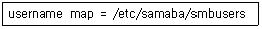
- SMB 사용자/패스워드 정보를 기록한 파일을 설정한다.
- SMB에 접속한 클라이언트의 이름을 기록한 파일을 설정한다.
- 리눅스 사용자와 SMB 사용자가 서로 다를 경우 매핑 정보를 저장하는 파일이다.
- SMB 사용자에 대한 허가권을 기록한 파일이다.
(정답률: 50%)
71. 다음은 NFS와 관련된 설명이다. 올바른 내용을 모두 고른 것은?
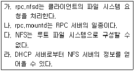
- 가, 다
- 나, 라
- 나, 다, 라
- 가, 나, 라
(정답률: 30%)
72. 다음에서 설명하는 내용 중 올바른 것은?
- NFS는 FTP 기반의 파일 공유 서비스이다.
- NFS 서버-클라이언트간의 통신방법으로 RPC를 사용한다.
- nfsstone을 이용하여 일반 파일 시스템의 성능을 측정할 수 있다.
- NFS를 이용하여 접근하는 경우 심볼릭 링크는 하드 링크로 변경된다.
(정답률: 40%)
73. 다음은 Proftpd 설정의 일부분이다. 다음 설명 중 알맞은 것은?
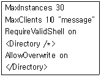
- 동시에 10개의 클라이언트 접속이 가능하다.
- Anonymous 사용자에 대해 덮어쓰기를 허용 한다.
- 사용자의 쉘 정보를 확인하도록 한다.
- 한 사용자에 대해 30개의 동시 접속을 허용 한다.
(정답률: 5%)
74. 다음 중 메일 서비스에 대한 설명으로 틀린 것은?
- SMTP(Simple Mail Transfer Protocol)는 전자우편 시스템 간에 메시지 교환 형식을 규정하는 것이다.
- MUA(M ail User Agent)로 는 sendmail이 대표적이다.
- MTA(Mail Transfer Agent)는 한 호스트로 부터 메일을 받아 다른 호스트로 전달하는 역할을 한다.
- MDA(Mail Delivery Agent)는 수신된 메시지를 해당 사용자의 메일 박스에 저장한다.
(정답률: 24%)
75. 프로토콜 암호화를 통하여 보안이 강화된 메일 서비스를 제공하려고 할때 다음 중 알맞게 짝지어진 것은?
- Qmail, Procmail
- IMAP, Postfix
- Postfix, SSL
- sendmail, DRAC
(정답률: 20%)
76. Procmail을 이용하여 스팸 메일을 관리하려고 한다. 다음 설명 중 틀린 것은?
- 사용자가 관리자에게 요청해서 서버 차원에서 스팸 메일을 차단하도록 한다.
- 사용자 스스로 자신의 홈디렉토리에 .procmailrc 파일을 생성해서 차단한다.
- spamhost.com에서 전송되는 모든 메일을 차단하는 규칙은 *From:.*spamhost.com 이다.
- 대량의 스팸 메일이 전송된 경우 메일 서버자체에서 수신 거부하도록 설정한다.
(정답률: 10%)
77. 다음 중 POP3에 대한 설명으로 틀린 것은?
- 서버로부터 클라이언트가 메일을 받을 수 있도록 통신을 하기위한 프로토콜이다.
- MUA 프로그램이 사용자의 서버와 통신하게 한다.
- 제목을 전달한 후 필요한 시점에 본문을 전달 한다.
- 메시지를 전송한 후 서버에서 삭제하는 것이 원칙이나 삭제하지 않도록 설정할 수 있다.
(정답률: 48%)
78. xinetd를 컴파일하여 설치하려고 한다. 이때 DOS 공격을 예방하기 위한 컴파일 옵션으로 필수적인 것은?
- --with-libwrap
- --with-loadavg
- --with-inet6
- --with-nls
(정답률: 19%)
79. 다음은 xinetd의 속성에 대한 설명 중 알맞은 것으로 구성된 것은?
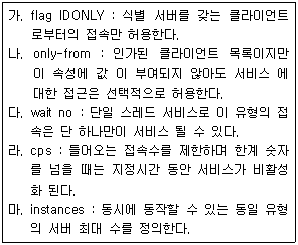
- 가, 라, 마
- 가, 나, 다
- 나, 다, 마
- 나, 라, 마
(정답률: 23%)
80. 다음 DNS 설정에 대한 설명 중 틀린 것은?
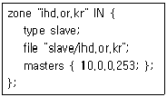
- 도메인 정보는 /etc/slave/ihd.or.kr 파일로 기록된다.
- ihd.or.kr에 대한 주 DNS는 10.0.0.253 이다.
- 이 서버는 ihd.or.kr 도메인에 대한 백업 기능을 수행한다.
- 도메인은 master와 slave 두가지 타입으로 정의할 수 있다.
(정답률: 44%)
81. 다음은 nslookup의 결과이다. ( )안에 들어갈 명령으로 알맞은 것은?
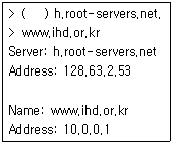
- server
- root
- query
- mx
(정답률: 48%)
82. 다음 DNS 설정에 대한 설명 중 옳지 않은 것은?(문제오류로 실제 시험에서는 3, 4번이 정답 처리 되었습니다. 여기서는 3번을 누르시면 정답 처리 됩니다.)
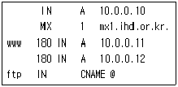
- 이 호스트의 IP는 10.0.0.10 이다.
- 메일을 전송하는 경우 mx1.ihd.or.kr로 전달 된다.
- ftp.ihd.or.kr의 IP는 10.0.0.11이 된다.
- www.ihd.or.kr로 두개의 IP가 연결되어 부하를 공유한다.
(정답률: 68%)
83. 다음은 Squid 설정 중 접근 제어 부분이다. 알맞은 내용을 고르시오.
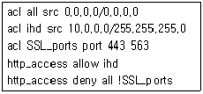
- 192.168.0.1에서 목적지 포트를 80으로 하면 사용할 수 있다.
- 10.0.0.10에서 목적지 포트를 443으로 하면 접근이 거절된다.
- 목적지 포트가 563이고 192.168.0.1에서 접근 한다면 사용가능하다.
- 목적지 포트가 80이고 10.0.0.1에서 접근하면 접근이 불가능하다.
(정답률: 46%)
84. 다음은 Proxy 서비스에 관련된 내용이다. 알맞은 내용으로 짝지어진 것은?(문제오류로 실제 시험에서는 1, 4번이 정답 처리 되었습니다. 여기서는 1번을 누르시면 정답 처리 됩니다.)
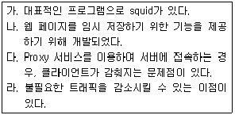
- 가, 나
- 나, 다
- 다, 라
- 가, 라
(정답률: 66%)
85. 다음은 nsswitch.conf 파일 내용의 일부이다. 다음 중 올바르게 설명한 것은?
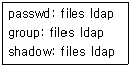
- 파일에 저장된 계정정보를 LDAP 서버와 동기화 한다.
- LDAP 서버에서 계정 정보를 얻어온다.
- 이 시스템의 사용자는 로그인시 LDAP 인증을 거쳐야한다.
- 이 시스템은 NIS를 사용하지 않는다.
(정답률: 20%)
86. 다음은 DHCP 서버 설정 정보의 일부이다. 다음 설명 중 틀린 것은?
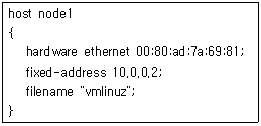
- node1으로 정의한 시스템은 네트워크 부트기능을 사용한다.
- MAC 주소를 기반으로 고정 IP를 할당하도록 설정되어있다.
- 커널 파일명으로 “vmlinuz”를 사용한다.
- node1 시스템은 NFS를 사용한다.
(정답률: 60%)
87. 다음은 DHCP 클라이언트의 resolv.conf이다. 이와 관련된 DHCP 서버 옵션으로 알맞은 것은?
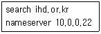
- subnet, netmask
- routers, range
- domain-name-servers, domain-name
- subnet-mask, broadcast-address
(정답률: 60%)
88. 다음 DHCP와 관련된 내용으로 옳지 않은 것은?
- bootp의 기능을 포함하고 있다.
- udp로 설정 정보를 전송한 뒤, 실패하면 tcp를 이용하여 IP를 할당한다.
- diskless 시스템을 위하여 root-path 정보를 제공할 수 있다.
- IP를 할당한 뒤 일정시간 이 지나면 만료시키지만 회수하지는 않는다.
(정답률: 10%)
89. 다음은 cvs를 사용하기 위한 xinetd 설정이다. ( )안에 들어갈 내용으로 알맞은 것은?
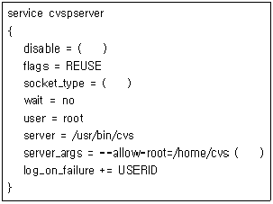
- no, stream, pserver
- false, dgram, -f
- yes, pserver, root
- true, tcp, cvsserver
(정답률: 62%)
90. 다음은 cvs 명령을 실행한 결과이다. 실행한 명령과 설명으로 알맞은 것은?
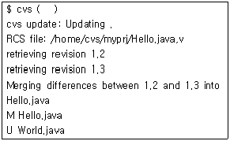
- update : Hello.java 파일은 손상되었다.
- update : World.java 파일을 서버로부터 다운로드하였다.
- checkout : 서버에 있는 Hello.java 파일과 로컬에 있는 내용이 합쳐졌다.
- checkout : World.java 파일을 서버로 업로드 하였다.
(정답률: 32%)
91. 다음은 CVS 설정에 대해 기술한 내용이다. ( ) 안에 들어갈 내용으로 알맞은 것은?
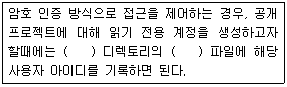
- /etc/CVS, writers
- CVSROOT, readers
- CVSROOT, writers
- /etc/CVS, readers
(정답률: 22%)
92. 다음 중 CVS 명령과 그 설명이 알맞게 짝지어진 것은?
- init - 프로젝트를 생성할때마다 수행하는 명령이다.
- update - CVS 저장소로부터 변경된 내용을 다운로드하는 명령이다.
- import - 백업한 데이터를 CVS 저장소로 복원하기 위한 명령이다.
- checkout - 프로젝트가 더 이상 유효하지 않음을 표시하는 명령이다.
(정답률: 20%)
93. 다음 중 SSH를 이용한 CVS 서버에 login 하기 위한 명령어로 알맞은 것은?(단, 서버는 cvs.ihd.or.kr, 디렉토리는 /cvsroot로 가정한다.)
- cvs -d :ssh:cvs.ihd.or.kr:cvsroot login
- cvs ssh://cvs.ihd.or.kr login
- cvs -d :pserver:cvs.ijhd.or.kr:/cvsroot login
- cvs -d :ext:cvs.ihd.or.kr:/cvsroot login
(정답률: 18%)
94. 다음 중 CVS와 관련이 없는 내용은 무엇인가?
- CVS는 2401 포트를 이용하여 서비스를 제공한다.
- 환경변수 CVSROOT가 설정되지 않으면 동작하지 않는다.
- CVS에 등록된 프로젝트를 처음 다운로드하는 과정을 checkout 이라고 한다.
- 자신이 수정한 내용을 저장하기 위해서는 commit 명령을 사용한다.
(정답률: 5%)
95. CVS를 이용하여 작업하던 도중 서버에 있는 내용과 로컬에서 작업한 내용의 차이점을 보고자 할때 알맞은 명령은 무엇인가?(단, 파일명은 driver.c이며, checkout 이후에 작업한 것으로 가정한다.)
- cvs diff driver.c
- cvs -d driver.c
- cvs release driver.c
- cvs ci driver.c
(정답률: 53%)
96. 다음 시나리오 상에서 추측할 수 있 는 공격 패턴을 모두 나열한 것은?
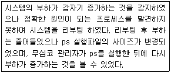
- 루트킷
- DoS, 트로이목마
- DoS, 백도어
- 백도어, 루트킷
(정답률: 47%)
97. 다음 ( )안에 들어갈 내용으로 알맞은 것은?
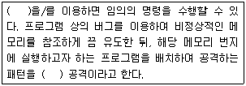
- 루트킷
- 버퍼 오버플로우
- 백 오리피스
- 웜
(정답률: 39%)
98. 다음은 시스템의 정상적인 수행에 문제를 야기하는 DOS 공격에 대한 설명이다. 알맞게 짝지어진 것은?
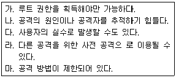
- 가, 나, 다
- 가, 다, 라
- 나, 다, 라
- 나, 다, 마
(정답률: 69%)
99. 다음 명령에 대한 설명으로 옳은 것은?(단, 다른 정책은 적용되지 않았다고 가정한다.)
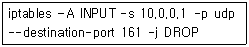
- 포트 161에서 전송한 데이터를 차단한다.
- 10.0.0.200에서 포트 161번으로 tcp 연결 시도는 허용한다.
- 10.0.0.1로 udp 데이터를 전송할 수 없다.
- 10.0.0.1에서 포트 161로 udp 통신을 시도하면 거절되었다는 메시지를 볼 수 있다.
(정답률: 8%)
100. 다음은 무엇에 관한 설명인가?
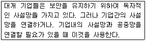
- IDS
- NMS
- VPN
- DMZ
(정답률: 45%)